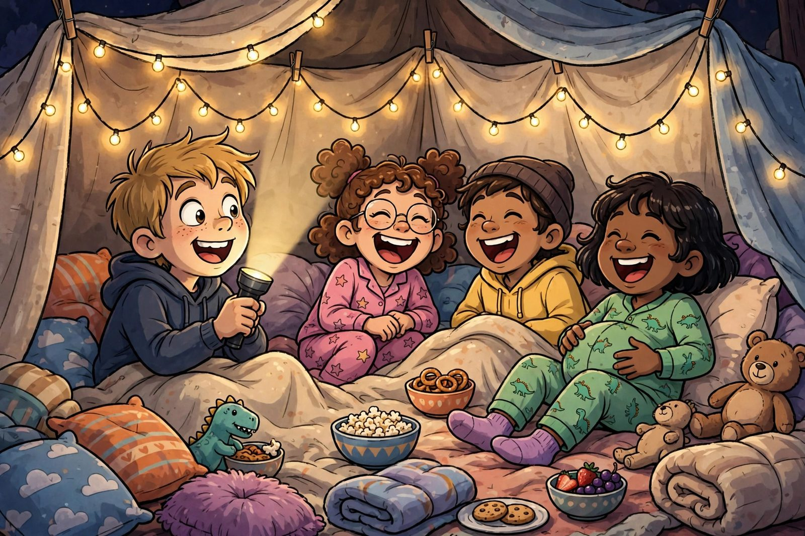

Sleepover & Party Jokes

Every great sleepover has three ingredients: snacks, a flashlight, and somebody who knows really good jokes. These are built for telling out loud — short setups, big punchlines, and maximum giggles per minute.
Birthday bangers
- What do you always get on your birthday? A year older.
- Why did the birthday cake go to the doctor? It was feeling a little crumby.
- What did the candles say to the cake? "You're going to blow it!"
- Why do we put candles on top of birthday cakes? Because it's too hard to put them on the bottom.
- What kind of birthday does a dog have? A paw-ty!
- How do you make a birthday party go faster? Time flies when you're having fun.
- What did the balloon say to the pin? "I have a popping feeling about this."
Sleepover silliness
- Why did the pillow go to the sleepover? It heard it was going to be a soft night.
- What do you call a sleepover with no sleeping? Normal.
- Why did the flashlight bring a friend? Two beams are better than one.
- What is a ghost's favorite bedtime story? One with a spine-tingling ending.
- Why did the blanket stay up late? It was wrapped up in a good book.
- What do you call it when everyone tells jokes at midnight? A laugh-in.
- Why did the popcorn get invited to every sleepover? It always pops off.
Group-game giggles
- Why did the board game get a timeout? It was board of the rules.
- What did the dice say to each other? "We're on a roll!"
- Why did the card game break up with the puzzle? Too many missing pieces.
- What is a party's favorite dance? The conga line — the more the merrier.
- Why did everyone laugh during hide-and-seek? Somebody hid behind the curtains — and their feet stuck out.
- What do you call a race between cupcakes? A bake-off.
How to tell a joke like a pro
Knowing the joke is only half of it. The other half is delivery:
- Slow down at the punchline. Rushing the last line is the number-one joke-killer.
- Don't laugh first. If you crack up before the punchline, the audience doesn't get to.
- Know your ending. A joke you can't finish is just a long awkward silence.
- One at a time. After a big laugh, let it land — then go again.
A sincere word about being funny
Here's the most important thing on this whole page, and it isn't a joke: being funny is a kind of power. When you can make people laugh, you can make a shy kid feel included, turn a boring afternoon into a great memory, and make your friends feel like the room is a better place because they're in it.
But the same power works in reverse. A joke aimed at someone — their looks, their mistakes, the thing they're embarrassed about — doesn't make you funny. It makes the room quieter, and it makes someone go home feeling smaller. The funniest people in the world almost never punch down; they make themselves the punchline, or they joke about the situation everyone's in together.
So here's the deal: be the kid whose jokes everyone wants to hear. Tell the silly ones. Tell them badly and laugh at yourself. And when you notice someone isn't laughing, check in — the best comedians are also the best friends.
Ready for the classics? Start with the 101 knock-knock jokes.